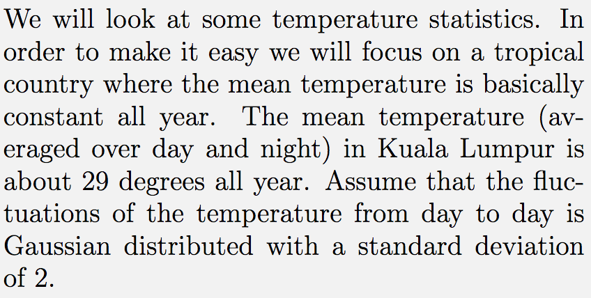
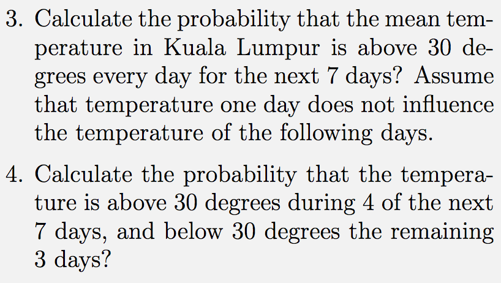

Forrige side🙂 🙁 La oss ta en titt på utdraget av resten av oppgave 1A.1:   Diskuter med medstudenter hvordan du kan løse disse oppgavene. For øyeblikket er det viktigste at du ser hvordan du skal gå frem for å løse dette. Neste side